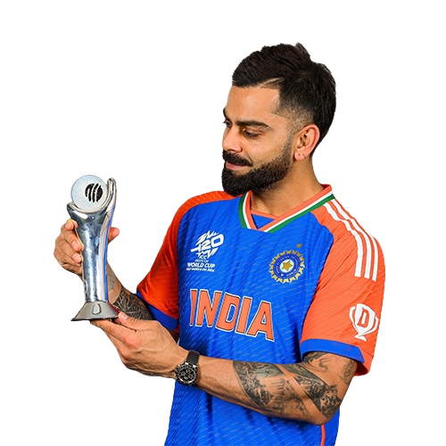

The Run Machine
"I like to be myself, and I don't pretend. For instance, I don't dress up for occasions; I am what I am."
Virat Kohli, born on November 5, 1988, is a top Indian cricketer known for his exceptional batting skills and aggressive playing style. He has set numerous records across all formats of the game, including being one of the fastest to reach 8,000, 9,000, 10,000, and 11,000 runs. Kohli has also served as the captain of the Indian national team, leading them to significant victories. Off the field, he is recognized for his fitness regime, philanthropy, and high-profile marriage to Bollywood actress Anushka Sharma.